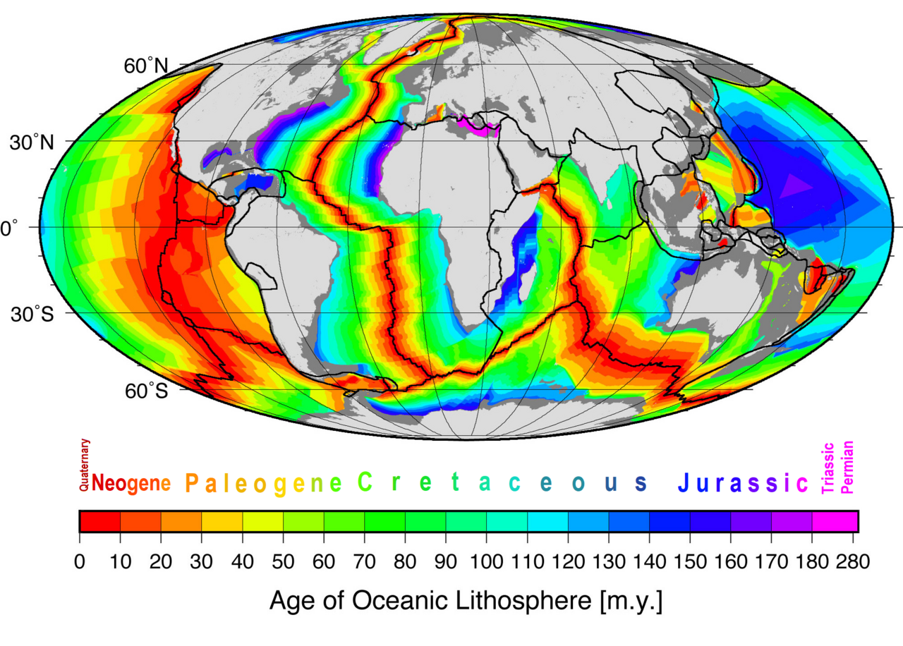

우리가 느끼지 못하는 사이, 판이 움직이고 있다
교과서 p. 22학습 목표
- 판 구조론이 정립되는 과정을 설명할 수 있다.
- 판을 움직이는 맨틀의 상부 운동과 플룸에 의한 구조 운동을 구분할 수 있다.

생각 1
판의 움직임은 어떻게 측정할까? (힌트: 인공위성)
생각 2
맨틀이 판을 '태우고' 갈까, 판이 스스로 움직일까?
생각 3
하와이처럼 판 한가운데에 있는 화산은 왜 생길까?
GPS로 측정한 판의 이동 방향·속도가 표시된 판 경계도를 보여 주며 판을 움직이는 힘을 자유롭게 예상하게 합니다. 교과서 운영안은 4차시(대륙 이동설~해저 지형 / 해양저 확장설·판 구조론 정립 / 탐구 / 판을 움직이는 힘·플룸)입니다.
2차시(100분) 수업 운영안
| 차시 | 단계 | 시간 | 활동 |
|---|---|---|---|
| 1차시 | 동기 유발 | 5분 | 대륙 퍼즐 맞추기, "왜 당시 학자들은 베게너를 믿지 않았을까?" |
| 핵심 개념 1 | 20분 | 대륙 이동설의 증거 4가지 → 한계 → 홈스의 맨틀 대류설 → 음향 측심 계산 | |
| 핵심 개념 2 (전반) | 17분 | 해양저 확장설: 해양 지각의 나이·퇴적물·지각 열류량 해석 | |
| 정리 | 8분 | O/X ①·②, 이론의 발달 순서 정리 | |
| 2차시 | 핵심 개념 2 (후반) | 15분 | 고지자기 줄무늬와 확장 속도 계산, 변환 단층, 베니오프대 |
| 핵심 개념 3 | 12분 | 판의 구조와 판을 움직이는 힘(수동적 힘·능동적 힘) | |
| 핵심 개념 4 | 13분 | 열점과 하와이 열도 연령 해석, 지진파 단면 영상 읽기 | |
| 탐구 활동 | 5분 | 관측 기기와 이론 발달 연결 표 완성 | |
| 형성 평가 | 5분 | 문항 풀이, 스스로 확인하기 |
대륙 이동설에서 해저 지형 탐사까지
교과서 p. 22 ~ 23(1) 대륙 이동설 (베게너, 1912)
- 판 구조론이 정립되면서, 각각 따로 일어난다고 여겨지던 대륙 이동, 해양 지각의 생성과 소멸, 습곡 산맥·호상 열도 형성, 지진, 화산 활동을 하나로 설명할 수 있게 되었다.
- 베게너는 남아메리카와 아프리카의 해안선이 잘 들어맞는 데서 출발해, 약 3억 년 전 초대륙 판게아가 있었고 약 2억 년 전부터 갈라져 이동했다고 주장했다.
- 증거
- 해안선 모양의 유사성, 산맥의 지질 구조와 암석 구성의 연속성
- 멀리 떨어진 대륙에서 발견되는 고생물 화석 분포의 연속성 (메소사우루스, 글로소프테리스 등)
- 남극을 중심으로 모이는 빙하의 흔적과 이동 방향
- 한계: 대륙을 움직이는 원동력을 설명하지 못해 대부분의 과학자가 받아들이지 않았다.
(2) 맨틀 대류설 (홈스, 1929)
- 홈스는 방사성 동위 원소의 붕괴열로 맨틀이 대류하고, 그 과정에서 대륙이 이동한다고 주장했다.
- 맨틀이 상승하는 곳: 대륙이 갈라지며 새로운 섬과 해양이 생긴다.
- 맨틀이 하강하는 곳: 횡압력으로 산맥이 생기고 지각이 맨틀 속으로 들어간다.
- 한계: 당시 탐사 기술로는 맨틀 대류를 확인할 수 없어 받아들여지지 않았다.
(3) 음향 측심법으로 알아낸 해저 지형
- 음향 측심법: 배에서 쏜 음파가 해저면에서 반사되어 돌아오는 데 걸린 시간을 재어 수심을 구한다.
- 1900년대 초 음향 측심 탐사로, 대서양 중앙의 해저 산맥이 전 지구적으로 이어져 있다는 것을 알아냈다. → 해양저 확장설의 기초
- 대륙 주변부: 대륙붕, 대륙 사면 / 심해저: 심해저 평원, 해산, 화산섬, 해령
- 특히 해령에서 멀어질수록 수심이 깊어지고, 수심이 급격히 깊어지는 해구가 있다는 것이 밝혀졌다.
자세히 알아보기 ① 베게너가 내놓은 증거와 그 한계 심화 정리
| 증거 | 내용 | 해석 |
|---|---|---|
| 해안선의 일치 | 남아메리카 동해안과 아프리카 서해안의 모양이 잘 들어맞는다 | 원래 붙어 있던 대륙이 갈라졌다. 해안선보다 대륙붕 끝(수심 약 1000~2000 m)을 기준으로 맞추면 더 잘 맞는다 |
| 지질 구조의 연속성 | 북아메리카의 애팔래치아산맥과 영국·스칸디나비아의 칼레도니아산맥이 대서양을 사이에 두고 이어진다 | 같은 시기에 하나의 산맥으로 만들어졌다가 대서양이 열리며 갈라졌다 |
| 화석 분포 | 메소사우루스(민물 파충류), 글로소프테리스(양치식물), 리스트로사우루스·키노그나투스(육상 파충류) 화석이 바다 건너 여러 대륙에서 발견된다 | 이 생물들은 넓은 바다를 건널 수 없으므로 대륙이 붙어 있었다 |
| 빙하의 흔적 | 고생대 말 빙하 퇴적층과 빙하 이동 방향이 지금은 열대·온대인 남아메리카·아프리카·인도·오스트레일리아에 남아 있다 | 대륙들을 모아 남극 주변에 놓으면 빙하 흔적이 한 덩어리로 이어진다 |
- 판게아: 베게너는 약 3억 년 전 모든 대륙이 하나로 모인 초대륙을 '판게아'라 부르고, 이것이 갈라져 지금의 대륙이 되었다고 보았다.
- 받아들여지지 않은 까닭: 단단한 대륙이 어떻게 해양 지각을 뚫고 움직이는지, 그 원동력을 설명하지 못했다. 베게너는 지구 자전에 의한 힘과 조석력을 제시했지만 너무 약했다.
자세히 알아보기 ② 홈스의 맨틀 대류설과 음향 측심 심화 정리
- 맨틀 대류설(홈스): 맨틀 안의 방사성 원소 붕괴열과 핵에서 오는 열 때문에 맨틀에 온도 차이가 생기고, 맨틀이 매우 느리게 대류한다.
- 대류가 상승하는 곳: 대륙이 갈라지고 새로운 바다가 생긴다.
- 대류가 하강하는 곳: 지각이 맨틀 쪽으로 끌려 들어가며 산맥이 만들어진다.
- 대륙은 대류하는 맨틀 위에 실려 이동한다 → 베게너가 풀지 못한 원동력을 제시
- 한계: 당시에는 맨틀 대류를 직접 확인할 관측 증거가 없어 널리 인정받지 못했다.
- 음향 측심법: 배에서 해저로 음파를 쏘고, 반사되어 돌아오는 시간을 재어 수심을 구한다.
수심 d = ½ × v × t (v: 바닷물 속 음파의 속력 약 1500 m/s, t: 왕복 시간)
예) 음파가 되돌아오는 데 4초 걸렸다면 → d = ½ × 1500 × 4 = 3000 m
• 왕복 시간이 길수록 수심이 깊다. 해령 부근은 시간이 짧고, 해구에서는 매우 길다.
• 제2차 세계 대전 무렵 이 방법으로 대서양 중앙 해령, 해령 꼭대기의 V자 열곡, 깊은 해구 등이 자세히 밝혀졌다.
개념 확인 ① O/X
해양저 확장설과 판 구조론의 정립
교과서 p. 24 ~ 26(1) 해양저 확장설 (헤스·디츠, 1962)
- 주장: 해령 아래에서 뜨거운 맨틀 물질이 올라와 새로운 해양 지각을 만들고, 해양 지각은 맨틀 대류로 해령 양쪽으로 이동하다가 해구에서 맨틀로 침강한다.
- 증거 ① 고지자기 줄무늬: 1950년대 자력계 조사로 과거에 지자기 역전이 여러 번 일어났고, 정자극기·역자극기 줄무늬가 해령을 중심으로 대칭이라는 것을 알았다. 바인과 매슈스(1963)는 이를 '해령에서 생긴 지각이 당시 자기장 방향을 기록한 채 양쪽으로 이동했기 때문'이라고 설명했다.
- 증거 ② 해양 지각의 나이: 1960년대 후반 심해저 시추로, 해령에서 멀어질수록 해양 지각의 나이가 대칭적으로 증가하고 퇴적물이 두꺼워진다는 것을 확인했다. → 해양저 확장설을 받아들이는 결정적 계기
- 가장 오래된 해양 지각도 대부분 2억 년을 넘지 않는다. 해령에서 생긴 지각이 이동하다 해구에서 섭입해 사라지기 때문이다.

해령에서 90 km 떨어진 지점의 해양 지각 나이가 360만 년이라면, 이 해역의 평균 확장 속도는?
팁: 거리는 cm, 시간은 년으로 바꾸고 10의 거듭제곱으로 나타내면 쉽게 계산된다. 시뮬레이션 2에서 확장 속도 2.5 cm/년, 탐침 90 km로 확인해 보자.
(2) 변환 단층과 지진 분포: 판 구조론의 정립
- 변환 단층 (윌슨, 1965): 해령은 연속된 구조가 아니라 수많은 단층으로 어긋나 있다. 윌슨은 해령과 해령 사이의 단층을 새로운 형태로 보고 변환 단층이라 불렀다. 양쪽 판이 반대 방향으로 움직이는 구간에서 지진이 자주 일어나고, 같은 방향으로 움직이는 구간에서는 거의 일어나지 않는다.
- 세계 표준 지진 관측망 (1960년대): 지진의 위치와 깊이를 정확히 측정한 결과, 지진은 주로 해령·변환 단층·해구 주변에서 발생하고, 해구에서는 섭입대를 따라 대륙 쪽으로 갈수록 진원이 깊어진다는 것을 알았다. → 해양 지각의 소멸을 설명하는 증거
- 판 구조론의 정립 (1960년대 후반): 아이작스가 판이 지각과 상부 맨틀로 이루어져 있음을 밝혔고, 매켄지·모건 등이 판 경계의 현상을 종합하면서 판 구조론이 완성되었다.
- 판 구조론: 지구 표면은 10여 개의 크고 작은 판으로 이루어져 있으며, 판의 상대적 운동으로 지진·화산 활동 등 여러 지질 현상이 일어난다는 이론
자세히 알아보기 ③ 해양저 확장설을 뒷받침하는 증거 심화 정리
- 해양저 확장설(헤스·디츠): 해령 아래에서 맨틀 물질이 올라와 새로운 해양 지각이 만들어지고, 이 지각은 해령 양쪽으로 멀어지다가 해구에서 맨틀 속으로 들어가 사라진다.
| 증거 | 해령에서 멀어질수록 | 까닭 |
|---|---|---|
| 해양 지각의 나이 | 많아진다 (해령 양쪽으로 대칭) | 해령에서 만들어진 지각이 계속 밀려나기 때문 |
| 해저 퇴적물의 두께 | 두꺼워진다 | 오래된 지각일수록 퇴적물이 쌓인 시간이 길다 |
| 지각 열류량 | 작아진다 (해령에서 가장 크고, 해구에서 작다) | 해령 아래에서 뜨거운 맨틀 물질이 올라오고, 해구에서는 차가운 판이 들어간다 |
| 수심 | 깊어진다 | 지각이 식으며 밀도가 커지고 가라앉는다 |
| 고지자기 줄무늬 | 해령을 축으로 대칭으로 반복 | 지구 자기장이 역전될 때마다 새 지각에 그때의 방향이 기록된다 |
- 해양 지각의 나이: 가장 오래된 해양 지각도 약 2억 년을 넘지 않는다. 수십억 년 된 대륙 지각과 달리, 해양 지각은 해구에서 계속 사라지고 새로 만들어지기 때문이다.
자세히 알아보기 ④ 고지자기 줄무늬로 확장 속도 구하기 심화 정리
- 잔류 자기: 마그마가 식을 때 자철석 같은 광물이 그때의 지구 자기장 방향으로 자화된다. 광물 온도가 퀴리 온도(자철석 약 580 °C, 적철석 약 675 °C) 아래로 내려가면 그 방향이 암석에 고정된다.
- 정자극기와 역자극기: 지금과 같은 방향일 때를 정자극기, 반대일 때를 역자극기라 한다. 지구 자기장은 지질 시대 동안 여러 번 역전되었다.
- 바인과 매슈스(1963): 해령을 축으로 정자극·역자극 줄무늬가 좌우 대칭으로 나타나는 것을 해양저 확장의 결과로 설명하였다 → 해양저 확장설의 결정적 증거
속도 = 해령으로부터의 거리 ÷ 해양 지각의 나이
예) 해령에서 70 km 떨어진 곳의 지각 나이가 450만 년이라면
→ 70 km ÷ 4.5백만 년 = 7,000,000 cm ÷ 4,500,000 년 ≈ 1.6 cm/년 (한쪽 판의 이동 속도)
→ 해령 양쪽이 함께 벌어지므로 두 판 사이는 약 3.1 cm/년씩 멀어진다.
• 줄무늬 간격이 넓을수록 확장 속도가 빠르다. 대서양 중앙 해령은 약 2 cm/년, 동태평양 해령은 6~12 cm/년 정도로 훨씬 빠르다.
자세히 알아보기 ⑤ 변환 단층과 섭입대의 지진 심화 정리
- 변환 단층(윌슨, 1965): 해령과 해령 사이를 잇는 단층. 양쪽 판이 서로 반대 방향으로 어긋나므로 지진이 활발하다.
- 해령의 바깥쪽 연장선(단열대)에서는 두 지각이 같은 방향으로 움직이므로 지진이 거의 없다.
- 변환 단층의 존재는 해저가 해령 양쪽으로 확장된다는 것을 다시 확인해 주었다.
- 베니오프대(와다티-베니오프대): 해구에서 대륙 쪽으로 갈수록 진원의 깊이가 깊어지며 비스듬히 기울어진 면을 이룬다 → 해양판이 대륙판 아래로 섭입하는 증거
| 구분 | 진원 깊이 | 주로 나타나는 곳 |
|---|---|---|
| 천발 지진 | 0~70 km | 해령, 변환 단층, 해구 부근 등 판 경계 전체 |
| 중발 지진 | 70~300 km | 섭입대 (해구에서 대륙 쪽으로 들어간 곳) |
| 심발 지진 | 300~660 km | 섭입대 깊은 곳 (해구에서 더 멀리 떨어진 대륙 쪽) |
- 판 구조론의 정립: 지진대·화산대의 분포, 해양저 확장, 변환 단층, 섭입대를 하나로 묶어, 지구 표면이 여러 개의 판으로 나뉘어 움직인다고 설명한다(1960년대 후반).
개념 확인 ② O/X
판을 움직이는 맨틀의 상부 운동
교과서 p. 28판은 맨틀에 '실려 가는' 것일까?
- 판의 이동 측정: 오늘날에는 인공위성을 이용한 GPS로 판의 분포와 이동 속도를 정밀하게 잰다. 판은 1년에 평균 수 cm씩, 판마다 다른 방향과 속도로 움직인다.
- 초기 생각 (수동적 이동): 상부 맨틀의 대류를 따라 판이 컨베이어 벨트처럼 실려 간다고 보았다.
- 최근의 이해: 판의 운동과 맨틀 대류는 서로 영향을 주고받으며, 판의 움직임이 맨틀 대류를 일으키기도 한다. 판을 움직이는 능동적인 힘은 다음과 같다.
- 섭입하는 판이 당기는 힘: 해령에서 생겨 해구까지 온 해양판은 차갑고 밀도가 커서 맨틀로 가라앉는다. 가라앉는 판의 무게가 나머지 판을 잡아당긴다. → 판을 움직이는 주요 원인
- 해령에서 미는 힘: 해령 중심부에서 생긴 판이 중력에 의해 해령의 경사면을 따라 미끄러져 내려가는 힘. 당기는 힘보다 영향력은 작지만 판을 움직이는 원인이 된다.
자세히 알아보기 ⑥ 판의 구조와 판을 움직이는 힘 심화 정리
- 판(암석권): 지각과 상부 맨틀의 윗부분을 합친 단단한 층. 그 아래에는 부분적으로 녹아 유동성이 있는 연약권이 있다.
| 구분 | 두께 | 주요 암석 | 밀도 |
|---|---|---|---|
| 해양판 | 약 100 km 이하 (평균 약 70 km) | 현무암질 해양 지각 | 크다 (약 3.0 g/cm³) |
| 대륙판 | 약 150 km 안팎 | 화강암질 대륙 지각 | 작다 (약 2.7 g/cm³) |
| 힘의 종류 | 이름 | 설명 |
|---|---|---|
| 수동적 힘 | 맨틀 대류 | 대류하는 맨틀이 그 위의 판을 끌고 간다 |
| 능동적 힘 | 해령에서 밀어내는 힘 | 높게 솟은 해령에서 판이 미끄러져 내려가며 밀려난다 |
| 섭입하는 판이 잡아당기는 힘 | 해구에서 차갑고 무거운 판이 가라앉으며 판 전체를 끌어당긴다 (가장 큰 힘으로 여겨진다) |
판의 이동 속도는 가장자리에 섭입대가 얼마나 길게 붙어 있는가와 관계가 깊다. 태평양판은 둘레의 상당 부분이 해구로 둘러싸여 섭입하는 판이 강하게 잡아당기므로 빠르게(연간 수 cm~10 cm 정도) 움직인다. 반대로 섭입대가 거의 없는 대서양 주변 판이나 대륙이 큰 판은 느리다.
개념 확인 ③ O/X
플룸에 의한 구조 운동
교과서 p. 29 ~ 30(1) 판 구조론으로 설명하기 어려운 화산: 열점
- 대부분의 화산 활동은 판의 경계에서 일어나지만, 판의 내부에서 일어나는 화산 활동은 판의 운동만으로 설명하기 어렵다.
- 열점: 맨틀 내부의 고정된 위치에서 생성된 마그마가 지속적으로 분출하는 지점
- 하와이 열도: 가장 젊은 하와이섬에서 북서쪽으로 갈수록 섬의 나이가 많아진다. 열점에서 생긴 화산섬이 태평양판을 따라 열점에서 멀어지고, 열점에서는 새 섬이 계속 만들어졌기 때문이다.
- 지구에는 수십 개의 열점이 있으며, 하와이처럼 판 내부에 있는 것도, 아이슬란드처럼 판의 경계에 있는 것도 있다.

| 섬 | 나이 (만 년 전) |
|---|---|
| 카우아이섬 | 380 ~ 560 |
| 오아후섬 | 220 ~ 330 |
| 몰로카이섬 | 130 ~ 180 |
| 마우이섬 | 70 ~ 130 |
| 하와이섬 | ~ 70 |
(2) 플룸 구조론
- 플룸: 맨틀과 외핵의 경계에서 원기둥 모양으로 상승하거나, 지각에서 맨틀 하부로 하강하는 물질 덩어리
- 플룸 구조론: 플룸의 상승과 하강으로 지구 내부의 변동이 일어난다고 설명하는 이론. 열점처럼 판 내부에서 일어나는 대규모 화산 활동을 설명한다.
- 지진파로 확인: 지구 내부에는 뜨거운 플룸과 차가운 플룸이 있다.
- 뜨거운 플룸: 맨틀과 외핵의 경계에서 생겨 상승 → 마그마 생성 → 분출 지점 = 열점
- 차가운 플룸: 섭입한 해양판이 상부·하부 맨틀 경계에 쌓였다가 하부 맨틀로 하강
- 차가운 플룸이 맨틀과 외핵의 경계에 닿으면, 상대적으로 뜨거운 주변 물질 일부가 상승해 뜨거운 플룸이 생긴다고 알려져 있다.
- 판 운동과 플룸 운동: 지각·상부 맨틀의 판 운동과 맨틀 전체에 걸친 플룸 운동은 서로 밀접하게 관련되어 있을 것으로 본다.
정리: 맨틀의 상부 운동 vs 플룸에 의한 구조 운동
| 구분 | 맨틀의 상부 운동 (판 구조 운동) | 플룸에 의한 구조 운동 |
|---|---|---|
| 일어나는 범위 | 지각과 상부 맨틀 | 맨틀 전체 (맨틀과 외핵의 경계 ~ 지표) |
| 움직이는 방식 | 판의 수평 이동 (섭입하는 판이 당기는 힘, 해령에서 미는 힘) | 원기둥 모양 물질의 상승(뜨거운 플룸)·하강(차가운 플룸) |
| 설명하는 현상 | 판 경계의 지진·화산, 해양 지각의 생성과 소멸, 산맥 형성 | 판 내부의 화산 활동(열점), 지구 내부의 대규모 변동 |
자세히 알아보기 ⑦ 뜨거운 플룸, 차가운 플룸, 열점 심화 정리
- 플룸: 주로 맨틀과 외핵의 경계에서 시작해 기둥 모양으로 오르내리는 맨틀 물질 덩어리
- 차가운 플룸: 섭입한 해양판이 상부 맨틀과 하부 맨틀의 경계(약 670 km) 부근에 쌓이다가, 한계에 이르면 무거워져 맨틀 아래쪽으로 가라앉으며 생기는 하강류
- 뜨거운 플룸: 차가운 플룸이 맨틀과 외핵의 경계에 닿으면 그 주변의 뜨거운 물질이 밀려 올라가며 생기는 상승류. 지표 가까이에서 압력이 낮아지면 마그마가 생긴다.
- 열점: 뜨거운 플룸이 올라와 마그마가 계속 만들어지는 고정된 지점. 전 세계에 수십 개 있으며, 판 경계가 아닌 판 내부에도 화산을 만든다(하와이, 옐로스톤 등).
• 화산섬의 나이(백만 년): 카우아이 5.6~3.8 → 오아후 3.3~2.2 → 몰로카이 1.8~1.3 → 마우이 1.0 이하 → 하와이 0.7~현재
• 남동쪽의 하와이섬이 지금 열점 위에 있고, 북서쪽으로 갈수록 나이가 많다 → 태평양판은 북서쪽으로 움직인다.
• 하와이섬에서 카우아이까지 약 500 km, 나이 차이 약 500만 년 → 약 10 cm/년 정도로 어림할 수 있다.
• 하와이 열도 북서쪽 끝은 북쪽으로 꺾인 엠퍼러 해산군으로 이어진다. 꺾인 곳의 나이(약 4700만 년 전)를 기준으로 그 이전에는 판이 북쪽으로 움직였다고 해석한다.
자세히 알아보기 ⑧ 지진파 단면 영상으로 본 플룸 심화 정리
- 지진파 단면 영상(지진파 단층 촬영): 병원의 CT처럼, 수많은 지진파 자료를 컴퓨터로 분석해 지구 내부의 온도·밀도 분포를 그림으로 나타낸 것
- 읽는 법: 온도가 높으면 지진파가 느려지고(빨간색), 온도가 낮으면 빨라진다(파란색).
| 깊이 | 보이는 특징 | 해석 |
|---|---|---|
| 약 100 km | 해령을 따라 빨간색(느림) | 해령 아래로 뜨거운 맨틀 물질이 올라온다 |
| 약 1500 km | 태평양 둘레 섭입대 아래에 파란색(빠름) | 섭입한 차가운 판이 하부 맨틀까지 내려간다 |
| 약 2800 km | 아프리카·남태평양 아래 빨간색, 아시아 아래 파란색 | 아프리카·남태평양 아래에 뜨거운 플룸, 아시아 아래에 차가운 플룸 |
| 비교 | 판 구조론 | 플룸 구조론 |
|---|---|---|
| 다루는 깊이 | 암석권과 상부 맨틀 | 맨틀 전체 (핵-맨틀 경계까지) |
| 잘 설명하는 현상 | 판 경계의 지진·화산·조산 운동 | 판 내부의 화산(열점), 맨틀 전체의 물질 순환 |
개념 확인 ④ O/X
관측 기기의 발달과 관련지어 판 구조론 정립의 역사 추적하기
교과서 p. 27탐구 · 관측 기기가 바꾼 지구관
목표 판 구조론 정립의 역사를 관측 기기의 발달과 관련지어 설명할 수 있다. 준비물 스마트 기기
음향 측심기
해저 지형
자력계
암석의 고지자기
지진계
지진의 위치·깊이
심해저 시추기
해양 지각의 나이·퇴적물 두께
과정
- 모둠별로 관측 기기 하나를 정해, 그 기기가 판 구조론 정립에 준 영향과 발달 시기를 조사한다.
- 각 모둠의 조사 결과를 발표하고 공유한다.
- 공유한 자료를 종합해 판 구조론 정립의 역사를 관측 기기와 관련지어 정보 그림(인포그래픽)으로 나타낸다.
결과 및 정리
1. 판 구조론 정립의 역사를 관측 기기의 발달과 관련지어 설명해 보자.
2. 새로운 관측 기기가 발달한다면 판 구조론의 발전에 어떤 영향을 줄지 토의해 보자.
스스로 확인하기
1. 판을 움직이는 힘을 설명해 보자.
2. 열점이 형성되는 과정을 플룸 구조론으로 설명해 보자.
3. 창의력 더하기 · 남아메리카판이 오스트레일리아판보다 느린 까닭은?
더 알아보기 · 관측 기기와 이론의 발달 탐구 확장
| 관측 기술 | 알아낸 것 | 뒷받침한 이론 |
|---|---|---|
| 음향 측심기 | 해령, 열곡, 해구 등 해저 지형 | 해양저 확장설 |
| 해양 자력계 | 해령에 대칭인 고지자기 줄무늬 | 해양저 확장설 |
| 해저 시추(심해 굴착) | 해령에서 멀수록 해양 지각이 오래되고 퇴적물이 두꺼움 | 해양저 확장설 |
| 지각 열류량 측정 | 해령에서 높고 해구에서 낮은 열류량 | 해양저 확장설, 맨틀 대류설 |
| 전 세계 지진 관측망 | 판 경계를 따라 띠 모양의 진앙 분포, 베니오프대 | 판 구조론 |
| 지진파 단면 영상 | 맨틀 깊은 곳의 뜨거운·차가운 플룸 | 플룸 구조론 |
| 위성 측지(GPS 등) | 판이 지금도 해마다 수 cm씩 움직이는 것을 직접 측정 | 판 구조론 |
개념 확인 문제
그림 출처
사진과 지도는 Wikimedia Commons의 퍼블릭 도메인 또는 CC 라이선스 자료이며, 각 그림 아래에 저작자와 라이선스를 표시했습니다. 모식도와 시뮬레이션은 직접 만들었습니다. 하와이 열도 섬의 나이는 교과서에 실린 자료(Essentials of Oceanography, 2018)를 따랐습니다.